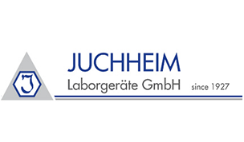

Компания Juchheim
Немецкая Компания PINK Thermosysteme с 25 летним производственным опытом предлагает широкий ассортимент продукции: от стационарных сушильных шкафов различных типов и размеров до передвижных сушильных систем.
Это оборудование, произведённое с учётом требований заказчиков, отлично зарекомендовало себя в работе благодаря надёжной конструкции, производительности, простоте эксплуатации и высокому качеству.
Благодаря постоянным инновациям в сочетании со стремлением к совершенству, PINK на протяжении более 20 лет ассоциируется с такими понятиями, как надёжный вакуум, высококачественное сушильное и технологическое оборудование для аэрокосмической, химической, фармацевтической, электротехнической и пищевой промышленностей.
В разделе Каталог вы можете скачать и просмотреть подробный каталог компании Lauda.
Производимое оборудование
Основные типы производимого оборудования
Печь с рабочим объемом камеры 2,2 м3 и пятисторонним обогревом. Печь была дополнительно оснащена плитами из карбида кремния для защиты нижних нагревателей от ударов в процессе загрузки/разгрузки печи.
- Особенностью поставки являлось невоз- можность привлечения иностранных специалистов на терриории предприятия.
- Сотрудники сервиса МИЛЛАБ регулярно проходят тренинги, участвуют в повы- шении квалификации, обучению новой продукции во время приёмки
- Особенностью поставки являлось невоз- можность привлечения иностранных специалистов на терриории предприятия.
- Сотрудники сервиса МИЛЛАБ регулярно проходят тренинги, участвуют в повы- шении квалификации, обучению новой продукции во время приёмки